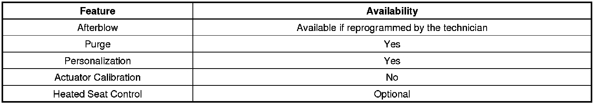

Automatic HVAC Description and Operation (Part 1)
Automatic HVAC Description and Operation (Part 1)
HVAC Control Components
HVAC Control Module
The HVAC control module is a GMLAN device that interfaces between the operator and the HVAC system to maintain air temperature and distribution settings. The battery positive voltage circuit provides power that the control module uses for keep alive memory (KAM). The control module supports the following features:

The HVAC control module will receive information that defines the current driver of the vehicle from the driver door module (DDM) through GMLAN communication. The HVAC system will memorize the following system configurations for up to 2 unique drivers:
* Driver set temperature
* Passenger set temperature
* Mode
* Blower motor speed
* A/C compressor request, auto ON or A/C OFF
This information shall be stored inside the HVAC control module memory. When a different driver identification button is selected the HVAC control module will recall the appropriate driver settings. When the HVAC control module is first turned on, the last stored settings for the current driver will be activated except for the rear defrost and heated seat settings.
Temperature, Recirculation and Mode Actuators
The actuators are 5-wire bi-directional electric motors that incorporate a feedback potentiometer. Low reference, 5-volt reference, position signal, and 2 control circuits enable the actuator to operate. The control circuits use either a 0 or 12-volt value to co-ordinate the actuator movement. When the actuator is at rest, both control circuits have a value of 0 volts. In order to move the actuator, the HVAC control module grounds one of the control circuits while providing the other with 12 volts. The HVAC control module reverses the polarity of the control circuits to move the actuator in the opposite direction. When the actuator shaft rotates, the potentiometers adjustable contact changes the door position signal between 0-5 volts. The HVAC control module uses a range of 0-255 counts to index the actuator position. The door position signal voltage is converted to a 0-255 count range. When the module sets a commanded, or targeted, value, one of the control circuits is grounded. As the actuator shaft rotates the changing position signal is sent to the module. Once the position signal and the commanded value are the same, the module removes power and ground from the control circuits.
Air Temperature Sensors
The air temperature sensors are 2-wire negative temperature co-efficient thermistors. The vehicle uses the following air temperature sensors:
* Ambient
* Inside
A signal and low reference circuit enables the sensor to operate. As the air temperature surrounding the sensor increases, the sensor resistance decreases. The sensor signal decreases as the resistance decreases. The sensor signal varies between 0-5 volts. The HVAC control module converts the signal to a range between 0-255 counts.
The inside temperature sensor operates within a temperature range between -6.5°C and 57.5°C (20.3-135.5°F). If the sensor is shorted to ground, voltage, or an open, the system will operate using an estimated default value to allow the system to operate. The ambient sensor operates within a temperature range between -30 to 51°C (-22 to 123.8°F). If the HVAC control module has determined that the ambient temperature sensor has failed, the driver information center (DIC) display shall display 59°F in place of the outside air temperature. If the sensor is shorted to ground, voltage, or an open, the system will operate using an estimated default value to allow the system to operate. If the engine coolant temperature is not more than 3°C (5.4°F) above the sensor reading, or if the engine has not been started in 3 hours, then the actual ambient air temperature sensor reading is displayed. Also at vehicle speeds greater than 35 km/h (22 mph), the ambient air temperature displayed may be allowed to increase, but only at a slow, filtered rate. The driver information center (DIC) displays the ambient air temperature value that it receives from the HVAC control module through a GMLAN message. The ambient air temperature value can be updated by an outside air instant update feature.
To use this feature, press the following switches on the HVAC control module simultaneously:
* AUTO
* MODE UP
* LEFT TEMPERATURE UP
Sunload Sensor
The sunload sensor is a 2-wire photo diode. The vehicle uses left and right sunload sensors. The 2 sensors are integrated into the sunload sensor assembly along with the ambient light sensor. Low reference and signal circuits enable the sensor to operate. As the sunload increases, the sensor signal decreases. The sensor operates within an intensity range between completely dark and bright. The sensor signal varies between 0-5 volts. The HVAC control module converts the signal to a range between 0-255 counts. The sunload sensor provides the HVAC control module a measurement of the amount of light shining on the vehicle. Bright, or high intensity, light causes the vehicles inside temperature to increase. The HVAC system compensates for the increased temperature by diverting additional cool air into the vehicle. If the sensor is open or shorted, no sunload adjustment occurs and the SERVICE A/C SYSTEM message is displayed.
Evaporator Temperature Sensor
The HVAC control module monitors the temperature of the air passing through the evaporator by the A/C evaporator air temperature sensor. This sensor is located on the evaporator core. The temperature is used to cycle the A/C compressor ON and OFF to prevent the evaporator core from freezing. A thermistor inside the sensor varies its resistance to monitor the evaporator air temperature. The HVAC control module monitors the voltage drop across the thermistor when supplied with a 5-volt reference signal. The HVAC control module will send a GMLAN message to the ECM to stop requesting the A/C compressor clutch operation if the temperature drops below 3°C (37°F). The sensor must be above 4°C (39°F) to request the A/C compressor clutch again.
The sensor operates within a temperature range between -40°C to 215°C (-40 to 355°F). If the HVAC control module detects an open in the evaporator temperature sensor or circuit, the GMLAN message sent to the ECM will not submit the A/C ON request. The HVAC control module will then send a request to the Radio for display of the SERVICE A/C SYSTEM that will be displayed on the DIC. The HVAC control module will also display A/C OFF on the module as long as the condition is present.
A/C Refrigerant Pressure Sensor
The A/C refrigerant pressure sensor is a 3-wire piezoelectric pressure transducer. A 5-volt reference, low reference, and signal circuits enable the sensor to operate. The A/C pressure signal can be between 0-5 volts. When the A/C refrigerant pressure is low, the signal value is near 0 volts. When the A/C refrigerant pressure is high, the signal value is near 5 volts.
The A/C refrigerant pressure sensor prevents the A/C system from operating when an excessively high or low pressure condition exists.
If the ECM detects a failure in the A/C refrigerant pressure sensor or circuit, the GMLAN message sent to the HVAC control module will be invalid. The HVAC control module will then send a request to the radio for display of the SERVICE A/C SYSTEM that will be displayed on the DIC. The HVAC control module will also display A/C OFF on the module as long as the condition is present.
Air Quality Sensor (RPO K14)
The air quality sensor recognizes carbon monoxide but is not designed as a safety feature to protect you from carbon monoxide. The air quality sensor is designed to limit your exposure to gasoline exhaust fumes and or diesel exhaust fumes that could enter into the passenger compartment from nearby vehicles for a limited amount of time.
The HVAC control module monitors the outside air quality while in AUTO mode via the air quality sensor assembly. You can activate the air quality sensor on your vehicle, if equipped, by pressing the Auto button on the HVAC module. The air quality sensor is a 5-wire sensor, 1 ignition voltage circuit, 2 ground circuit, and 2 control circuits. There are 2 sensors inside the air quality sensor assembly. A hydro carbon (HC) sensor that is used for detecting gasoline exhaust fumes and a Nox sensor that is used for detecting nitrous oxide, diesel exhaust fumes. The HVAC control module outputs a 5-volt signal on the HC and Nox control circuits and operates in a range between 0-5 volts.
The HVAC module updates the air quality sensor calibration approximately 4 times per second. The air quality sensor input to the HVAC module is compared to the previously updated air quality sensor calibration. If the voltage difference is great enough the recirc actuator will be controlled to recirc, outside air, or partial recirc outside air position based on the air quality sensor input.
When air quality around the front of the vehicle is poor, the air quality sensor system operates as follows:
* Poor air quality with high HC levels will cause the HC control circuit to read a lower voltage.
* Poor air quality with high Nox levels will cause the Nox control circuit to read a higher voltage.
* The recirculation actuator is forced to the recirculation position.
* The recirc symbol on the HVAC module will illuminate.
* The recirc icon will not illuminate if the recirc actuator is already in the auto recirc position.
When air quality around the front of the vehicle is normal, the air quality sensor system operates as follows:
* Normal air quality levels the HC control circuit will recognize very little voltage change from the previously updated calibration.
* Normal air quality levels the Nox control circuit will recognize very little voltage change from the previously updated calibration.
* The recirculation actuator position is not controlled by the air quality sensor system.
The following are conditions that will prevent the air quality sensor from controlling the recirc actuator:
* A/C OFF conditions (compressor OFF) prevents air quality sensor from changing the current position of the actuator)
* Coolant temperature below 37°C (99°F) during warm up will prevent the blower from operating and air quality sensor from controlling the recirc position.
* Outside air temperature less than 5°C (41°F) (prevents air quality sensor from changing the current position of the actuator)
* Outside air temperature less than 15°C (59°F) and A/C high side pressure less than 196 kpa (28 psi) (prevents air quality sensor from changing the current position of the actuator)
* 28 seconds sensor warm-up time after ignition is turned ON (prevents air quality sensor from changing the current position of the actuator)
* Evaporator temperature sensor failure
* Customer manually selects defrost or defog (forces actuator to outside air position)
* Customer manually selects recirc or outside air position
* Coolant temperature above 112°C (V8), 119°C (HFV6) the actuator is forced to the recirc position. When coolant temperature drops below 109°C (V8), 116°C (HFV6) forced recirc is canceled.
* A/C pressure above 2 500 kpa (362 psi) the actuator is forces to the recirc position. When A/C pressure drops below 2 000 kpa (290 psi) forced recirc is canceled.
The following describes the recirc actuator function after the air quality sensor has canceled the command to recirc
* Full recirc position will be held for 2 minutes when vehicle speed is less than 10 km/h (6.3 mph) after 2 minutes expires the recirc door will move to full outside air position.
* Partial recirc, outside air position will be held for 2 minutes when vehicle speed is above 20 km/h (12.5 mph) after 2 minutes expires the recirc door will move to full outside air position.
* Full outside air position if vehicle speed is greater than 60 km/h (37 mph) and blower is not on high speed.
The Air Quality system will have three Sensitivity levels, Low, Medium, and High. Medium is the default setting in new vehicles.
The Sensitivity Level can be changed through SPS programming. If exhaust fumes are noticed in the vehicle a more sensitive level should be selected.
The driver information center (DIC) will display the SERVICE A/C SYSTEM message if the HVAC system has detected a short to ground in the air quality sensor circuit. An open circuit or a short to voltage in the air quality sensor circuit will be diagnosed through symptom based diagnostics because both of these conditions will not turn on the SERVICE A/C SYSTEM message or set a trouble code.
Air Speed
The blower motor forces air to circulate within the vehicles interior. The vehicle operator determines the blower motors speed by placing the blower motor switch in a desired speed position or by selecting automatic operation. In manual operation, once a blower speed is selected, the blower speed remains constant until a new speed is selected. In automatic operation, the HVAC control module will determine what blower speed is necessary in order to achieve or maintain a desired temperature. When the HVAC control module blower switch is set to the maximum manual speed position and the Mode Switch is set to PANEL or AUTO. The Blower Motor operates at 79.71% of the Blower Motor's maximum output. This is normal operation. When the HVAC control module blower switch is set to the maximum manual speed position and the Mode Switch is set to a position other than PANEL or AUTO. The Blower Motor operates at 100% of the Blower Motor's maximum output. If an On Star call is initiated while the blower is in high speed during automatic operation, the blower speed will be lowered to reduce background noise.